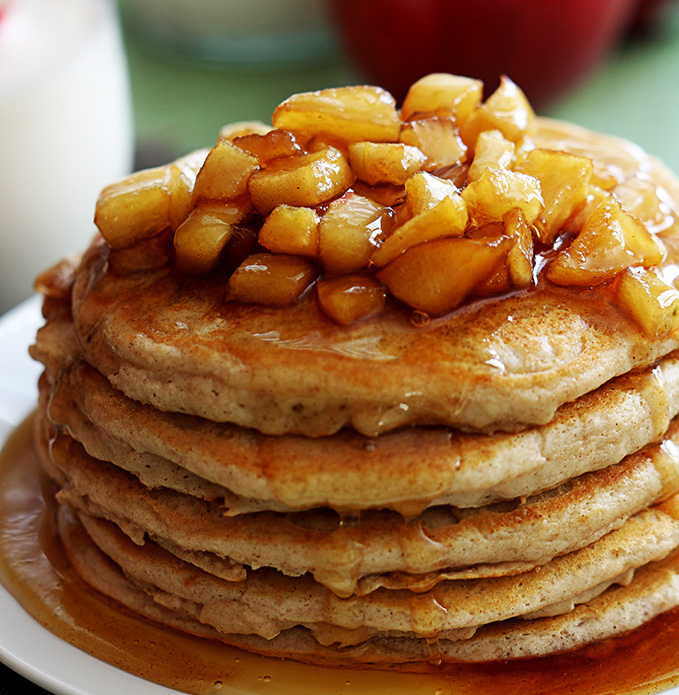

Spiced Apple Pancakes

Prep time: 15 min
Cook time: 10 min
Servings: 8 pancakes
Ingredients
- 1 cup flour
- 1 large apple, peeled
- 1 tbsp sugar
- 1 tbsp cinnamon (or more to taste)
- 1/2 tsp baking powder
- 1 tsp vanilla extract
- 2/3 cup milk
- 1 egg
Directions
- In a medium bowl, combine flour, sugar, cinnamon, baking powder, and 1 pinch of salt.
- Separate the egg yolk and egg white. Add the egg yolk to the dry ingredients.
- Whisk the egg white until foamy.
- Slice the peeled apple into thin strips. Alternatively, grate the apple.
- Combine dry ingredients, apple, vanilla extract, egg white, and milk into a homogenous batter.
- To a large pan, add 1 tbsp butter. Add the batter (about 3 tbsp per pancake) and cook for 2 min per side on medium-high heat.
Back